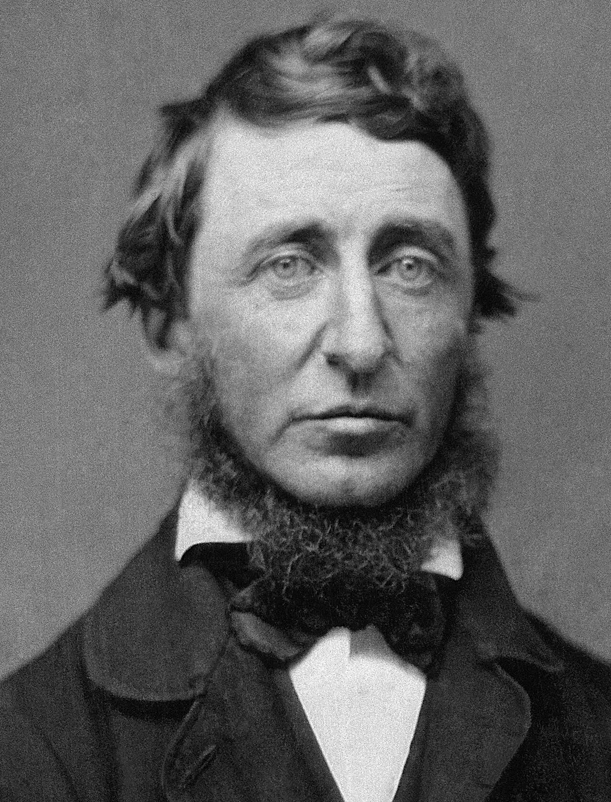
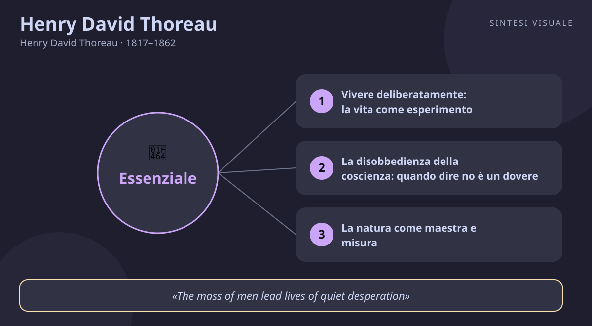

Home / Filosofi / Henry David Thoreau

Henry David Thoreau
Henry David Thoreau · 1817–1862
«Andai nei boschi per vivere con saggezza»
- Vita deliberata
- Disobbedienza
- Natura
- Semplicità
💬La massima
«Andai nei boschi perché desideravo vivere con saggezza, affrontare solo i fatti essenziali della vita, e vedere se non fossi capace di imparare quanto essa aveva da insegnarmi, e non scoprire, in punto di morte, che non ero vissuto.»
— Henry David Thoreau, Walden, capitolo 2 «Dove ho vissuto e per che cosa ho vissuto», 1854 (in inglese: «I went to the woods because I wished to live deliberately, to front only the essential facts of life... and not, when I came to die, discover that I had not lived»)
Questa frase è l'esperimento di una vita intera. Thoreau non andò nei boschi per fuggire dal mondo, ma per metterlo alla prova: se togli tutto il superfluo — le mode, le chiacchiere, le spese inutili, il lavoro fatto solo per comprare cose — cosa resta della vita? È poco o è moltissimo? La sua risposta è che resta il midollo, la parte più nutriente: e che la maggior parte delle persone non lo assaggia mai, perché troppo occupata a inseguire mezzi senza mai chiedersi a quale fine servano.
Pensate a una persona che svuota l'armadio e scopre di usare davvero solo un terzo dei vestiti, e di sentirsi più leggera con meno: Thoreau fa la stessa operazione con l'esistenza intera. «Vivere con saggezza» — deliberately — significa scegliere ogni cosa di proposito, senza pilota automatico: sapere perché ti alzi la mattina, perché fai quel lavoro, perché compri quell'oggetto. La paura che lo muove è precisa e bruciante: arrivare alla fine e accorgersi di non aver mai vissuto davvero, come chi torna da un viaggio e si rende conto di aver guardato tutto solo attraverso lo schermo del telefono.
Il passo continua con l'immagine più famosa: «volevo vivere in profondità e succhiare tutto il midollo della vita, vivere in modo così robusto e spartano da mettere in fuga tutto ciò che non era vita». Ridurre la vita «ai suoi termini più bassi» non è impoverirla, è assaggiarla pura: se è meschina, conoscerne tutta la meschinità; se è sublime, conoscerla per esperienza diretta. È un invito a verificare di persona, invece di credere ai resoconti degli altri.
👤Biografia
Henry David Thoreau nasce il 12 luglio 1817 a Concord, nel Massachusetts, da un fabbricante di matite e da una madre energica e colta. Studia ad Harvard, dove si laurea nel 1837, e per un breve periodo fa il maestro con l'amato fratello John — che muore di tetano nel 1842, un lutto che lo segna per sempre. Rifiuta le carriere sicure: lavora nella fabbrica di matite del padre (migliorandone davvero la grafite), fa il geometra, il giardiniere, l'operaio saltuario. Vuole mantenersi con poche ore di lavoro al giorno e tenere il resto del tempo per sé: per leggere, camminare, osservare, scrivere.
La svolta arriva con l'amicizia di Ralph Waldo Emerson, il saggio di Concord, che gli fa da mentore, gli pubblica i primi scritti sulla rivista The Dial e gli mette a disposizione un terreno sul laghetto di Walden. Il 4 luglio 1845 — giorno dell'Indipendenza, e non è un caso — Thoreau si trasferisce nella capanna che si è costruito da solo: ci vive due anni, due mesi e due giorni, fino al 6 settembre 1847. Da quell'esperimento nasce Walden (1854). Nel luglio 1846, durante il soggiorno al lago, passa una notte nel carcere di Concord per essersi rifiutato di pagare la tassa pro capite in segno di protesta contro la schiavitù e la guerra al Messico: da lì nasce il saggio sulla Disobbedienza civile (1849).
Uomo schivo, mai sposato, camminatore instancabile — quattro ore al giorno nei boschi — tiene un diario monumentale di oltre due milioni di parole. Abolizionista attivo, aiuta gli schiavi in fuga e difende pubblicamente John Brown nel 1859. Muore di tubercolosi il 6 maggio 1862, a soli quarantaquattro anni, lavorando fino all'ultimo ai suoi manoscritti.
📌Sintesi del pensiero
Per Thoreau la vita buona è la vita deliberata: ridurre i bisogni all'essenziale per liberare tempo, attenzione e coscienza, imparare dalla natura invece di sfruttarla, e obbedire alla propria coscienza prima che alle leggi ingiuste dello Stato. L'uomo non deve adattarsi alla macchina della società — il lavoro alienato, il commercio, il conformismo — ma misurare ogni cosa sul metro dell'esperienza diretta: ciò che non nutre la vita interiore va scartato, fosse anche rispettabile e ben pagato.
🏛️I temi fondamentali
- Vivere deliberatamente: la vita come esperimento. Thoreau trasforma l'esistenza in un laboratorio: taglia le spese, costruisce da solo la capanna (costata 28 dollari e 12 centesimi e mezzo, conti alla mano), coltiva fagioli, misura tutto. Esempio concreto: un giovane che per un mese annota ogni spesa e scopre che metà dello stipendio finisce in abbonamenti, consegne a domicilio e acquisti d'impulso — e tagliandoli lavora un giorno in meno a settimana senza perdere nulla di ciò che conta. Quello è vivere deliberately.
- La disobbedienza della coscienza: quando dire no è un dovere. Se lo Stato ordina cose ingiuste — mantenere la schiavitù, fare una guerra di conquista — il cittadino giusto non aspetta la maggioranza: ritira il proprio sostegno, anche a costo del carcere. Esempio concreto: un impiegato a cui viene chiesto di falsificare un rendiconto e che rifiuta, sapendo di rischiare il posto — non fa politica, fa come Thoreau in carcere: mette la coscienza sopra l'ordine ricevuto.
- La natura come maestra e misura. Il bosco, il lago, le stagioni non sono uno sfondo ma un testo da leggere: la formica che lotta, il ghiaccio di Walden che si scioglie, il fagiolo che cresce insegnano pazienza, cicli, limiti. Esempio concreto: una manager stressata che inizia a camminare un'ora al giorno nel parco senza cuffiette e si accorge che le idee migliori le vengono lì, non davanti al foglio di calcolo — sta facendo, in piccolo, ciò che Thoreau faceva per quattro ore al giorno.
- Economia e tempo: il vero prezzo è la vita. Ogni oggetto costa non i soldi del cartellino, ma le ore di vita spese per comprarlo: «il prezzo di una cosa è la quantità di vita che si scambia con essa». Esempio concreto: comprare un'auto più grande a rate significa, conti alla mano, lavorare due anni in più prima di smettere — Thoreau chiederebbe se quei due anni di libertà valgono i sedili in pelle.
- Fiducia in sé e non conformismo: pensare con la propria testa. Vestirsi, parlare e lavorare come tutti solo perché «si fa così» è una forma di sonno: il saggio segue il proprio tamburo, anche se marcia fuori tempo rispetto alla parata. Esempio concreto: un ragazzo che rifiuta l'università prestigiosa scelta dai genitori per fare il falegname — e dopo tre anni ha un mestiere, clienti e pace — ha applicato Thoreau senza averlo mai letto.
📚Le opere principali
- Walden, ovvero Vita nei boschi (1854). Il resoconto dei due anni al lago: economia, fagioli, formiche, stagioni, silenzio. Tesi centrale: semplificando la vita all'essenziale si scopre che basta poco per vivere bene e resta tempo per ciò che conta. Conta perché è il libro-manifesto di ogni ritorno all'essenziale, dall'ambientalismo al minimalismo.
- Disobbedienza civile (1849, originariamente «Resistance to Civil Government»). Il saggio nato dalla notte in carcere: il dovere di non collaborare con l'ingiustizia. Tesi centrale: la coscienza viene prima della legge, e il governo migliore è quello che governa di meno. Conta perché ha ispirato Gandhi, Martin Luther King e ogni movimento nonviolento del Novecento.
- Una settimana sui fiumi Concord e Merrimack (1849). Il viaggio in barca col fratello John, pubblicato a sue spese: memorie, poesie, digressioni filosofiche. Tesi centrale: il viaggio esteriore è sempre un viaggio interiore. Conta perché è il primo libro di Thoreau e il monumento all'amore per il fratello perduto.
- Camminare (Walking, pubblicato postumo nel 1862). Il grande elogio del camminare nei boschi come pratica spirituale e di libertà. Tesi centrale: solo muovendosi lenti nella natura selvatica l'uomo ritrova se stesso. Conta perché è il testamento spirituale di Thoreau e la bibbia di escursionisti e ambientalisti.
💬Massime celebri
«La massa degli uomini vive una vita di quieta disperazione» — Walden, capitolo 1 «Economia» (1854; in inglese: «The mass of men lead lives of quiet desperation»). Conta perché descrive in una riga la malattia moderna: lavorare senza gioia per comprare cose di cui non si ha bisogno.
«Semplifica, semplifica» — Walden, capitolo 2 (1854; in inglese: «Simplify, simplify»). Conta perché è il programma etico di Thoreau in due parole: meno oggetti, meno impegni, più vita.
«Se uno avanza fiducioso nella direzione dei suoi sogni e si sforza di vivere la vita che ha immaginato, incontrerà un successo insperato nelle ore comuni» — Walden, capitolo 18 «Conclusione» (1854). Conta perché è la promessa più citata di Thoreau: la fedeltà ai propri sogni cambia le regole del gioco a proprio favore.
⌛Contesto storico
Thoreau vive nell'America giovane, rumorosa e in piena corsa: nasce due anni dopo la fine della guerra contro l'Inghilterra e muore nel pieno della guerra civile. Intorno a lui gli Stati Uniti raddoppiano di dimensioni con la conquista dell'Ovest, il «destino manifesto», la corsa all'oro in California del 1849; la ferrovia — che passa proprio accanto a Walden — e il telegrafo accorciano le distanze; nel New England sorgono i primi mulini e le fabbriche tessili di Lowell, dove lavorano migliaia di ragazze contadine. È l'età dell'individualismo jacksoniano e insieme del conformismo borghese: tutti inseguono rispettabilità e denaro.
L'ombra più lunga è la schiavitù: il compromesso del Missouri del 1820, il giornale abolizionista di Garrison del 1831, la legge sugli schiavi fuggiaschi del 1850 che obbliga anche i cittadini del Nord a collaborare alle catture, e intanto la guerra contro il Messico del 1846-1848, vista da molti come una guerra per estendere il territorio schiavista. Thoreau paga di persona: la sua notte in carcere è del 1846, il suo discorso contro la schiavitù del 1854, la difesa di John Brown — impiccato dopo il raid di Harper's Ferry — del 1859, a tre anni dalla morte.
I movimenti che lo formano sono il trascendentalismo di Emerson e Margaret Fuller con la rivista The Dial, il romanticismo europeo di Coleridge e Carlyle, la riscoperta delle scritture indiane — la Bhagavadgita e le Upanishad, che legge nelle nuove traduzioni inglesi — e l'esempio degli stoici antichi. I movimenti che trasmette sono immensi: la disobbedienza civile nonviolenta, l'ambientalismo e la difesa della natura selvaggia, la controcultura e l'idea di una vita semplice e intenzionale.
🌊L'eredità
L'eredità di Thoreau viaggia su due binari che si intrecciano. Sul primo cammina la disobbedienza civile: il Mahatma Gandhi legge il saggio sudafricano del 1907 e ne fa il modello del satyagraha contro le leggi razziali; da Gandhi l'insegnamento passa a Martin Luther King, che nella Lettera dal carcere di Birmingham del 1963 rivendica la stessa idea — una legge ingiusta non obbliga in coscienza — e di lì ai movimenti per i diritti civili in tutto il mondo. Tolstoj, che carteggiava con Gandhi, ammirava Thoreau e lo citava come maestro di nonviolenza cristiana.
Sul secondo binario cammina la natura: John Muir, il padre dei parchi nazionali americani, si forma su Thoreau; Rachel Carson, con Primavera silenziosa, ne raccoglie il testimone ecologista; i beat e Kerouac, la controcultura degli anni Sessanta, il movimento verde e oggi il minimalismo e il downshifting citano tutti Walden come libro di fondazione. Poeti, presidenti e manifestanti lo citano da un secolo e mezzo: il misantropo della capanna è diventato, paradossalmente, uno degli americani più ascoltati del mondo.
🌍Esempi di oggi
- Il cassetto degli abbonamenti. Marta paga cinque abbonamenti streaming, due palestre e tre scatole di cibo a domicilio, e a fine mese è in rosso: una sera fa i conti come Thoreau coi suoi fagioli, taglia tutto tranne l'essenziale e scopre di «guadagnare» due settimane di lavoro all'anno. Ha ridotto la sua vita ai termini più bassi, e si è accorta che bastano.
- Il no del tecnico. A Paolo, programmatore, viene chiesto di inserire nel gestionale un trucco che gonfia le fatture ai clienti: dice di no per iscritto, sapendo di giocarsi la promozione. Non ha letto la Disobbedienza civile, ma ha fatto esattamente ciò che Thoreau chiedeva: la coscienza prima dell'ordine, anche quando costa.
- La passeggiata senza telefono. Luca, rappresentante sempre di corsa, inizia a pranzare camminando mezz'ora al parco col telefono in tasca spento: dopo un mese dorme meglio, litiga meno in famiglia e ha chiuso due trattative nate da idee venute camminando. La natura come maestra, in versione pausa pranzo.
📄
# Henry David Thoreau — «Andai nei boschi per vivere con saggezza»
Buongiorno! Oggi incontriamo l'uomo che andò a vivere in una capanna per capire cosa conta davvero: maestro elementare, fabbricante di matite, geometra dei boschi, camminatore instancabile e coscienza ribelle dell'America. Il ritratto qui sopra — il dagherrotipo scattato il 18 giugno 1856 a Worcester da Benjamin D. Maxham, quando Thoreau aveva trentotto anni — lo mostra con la barba a collana, la giacca nera e lo sguardo fiero e un po' schivo: l'immagine più famosa di lui, quella che lui stesso giudicò «più bella del vero».
🧠Quiz
Metti alla prova quello che hai imparato — rispondi in chat con es. 1B 2A 3C 4D 5A:
1 Perché Thoreau dice di essere andato nei boschi?
2 Quanto durò l'esperimento della capanna di Walden?
3 Cosa insegna la Disobbedienza civile?
4 Cosa significa «il prezzo di una cosa è la quantità di vita che si scambia con essa»?
5 Chi fu influenzato direttamente dal saggio sulla disobbedienza civile?
✅Soluzioni — tocca per vedere
1B – 2C – 3B – 4B – 5B
🔁Ripasso
- Vivere deliberatamente: non fuga dal mondo ma esperimento per distinguere l'essenziale dal superfluo e non scoprire in punto di morte di non aver vissuto. Se sbagli la 1, rileggi il commento alla massima.
- Le date di Walden (1845-1847) e la notte in carcere (1846): l'esperimento dura due anni e due mesi; la disobbedienza nasce dal rifiuto di finanziare schiavitù e guerra. Se sbagli la 2 o la 3, rileggi biografia e temi.
- Il prezzo come vita: il costo vero è tempo di esistenza, non denaro. Se sbagli la 4, rileggi il quarto tema.
- Gandhi e King: la linea nonviolenta da Thoreau al Novecento è il cuore dell'eredità. Se sbagli la 5, rileggi l'eredità.
🖼️In un colpo d’occhio

Tocca l’immagine per ingrandirla.